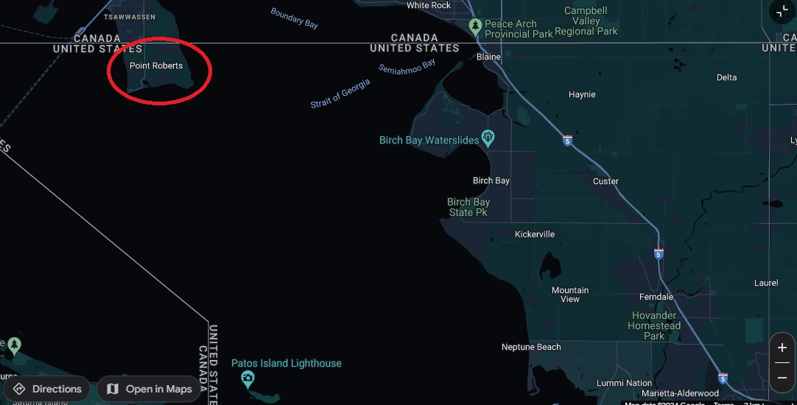

The interesting facts of Point Roberts
City population: 1,249.
Year city was incorporated: Not an incorporated city.
Region of the state in which city is located: Northern-west part of the pudget sound.
City Classification: Rural.
Average income of city vs state: Point Roberts's average household income is $74,400 compared to the state's average of $89,138

Point Roberts is found West of the Straight of Georgia.
Point Roberts is a town that falls within the United States (In particular, Washington State) with how the border lines are drawn with Canada, but this cozy little nook can only be reached through Canada unless you fancy taking a boat!